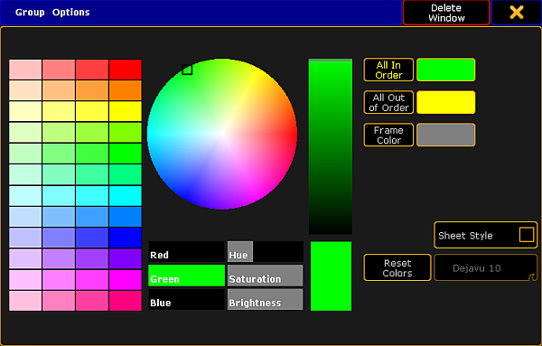
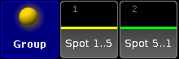

Change colors in group options for all in order and all out of order
The following describes how to set colors in All in Order and All out of Order in Group Options.
All in Order shows that the fixtures are selected in the same order they were initially stored in the corresponding group.
All Out of Order shows that the fixtures are selected in a different order they were initially stored in the corresponding group.
To change the group colors in All in Order and All Out of Order:
Open thepool Groups.
- Tap on an empty space on the screen. Create Basic Window opens.
- Tap Pools, then tap Groups.
Tap the yellow ball in the upper left corner of the Group Pool Window.
Group Options opens.
 Group Options
Tap All In Order and then choose a color from the color table or the color circle.
- The color you have chosen is displayed as a line within the pool object right above the font of the pool object.
Tap All Out of Order and then choose a color from the color table or the color circle.
- The color you have chosen is displayed as a line within the pool object right above the font of the pool object.
Let´s say we have selected the color green in All in Order and the color yellow in All Out of Order.
This is what it would look like:

Group colors
For more information on how to reset and adjust colors, change the pool into sheet style and/or how to use the Hue, Saturation and the Brightness slider see Adjust pool options.
Important:
Some fixtures may have a red line within the pool object right above the font of the pool object. This red line is automatically generated when all fixtures or a part of fixtures are not available due to storing onto another world.
The pool options are now adjusted to your needs and are saved in your user profile.
Hint:
You can also use the Appearance keyword to change the color of one or more pool objects.